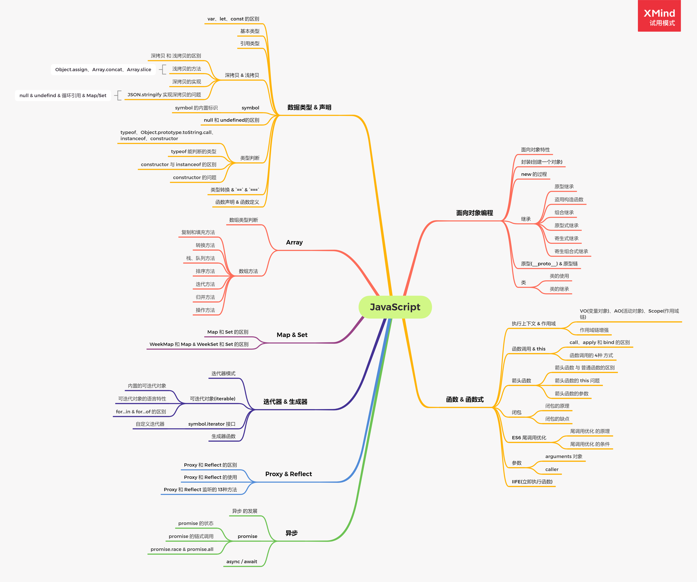
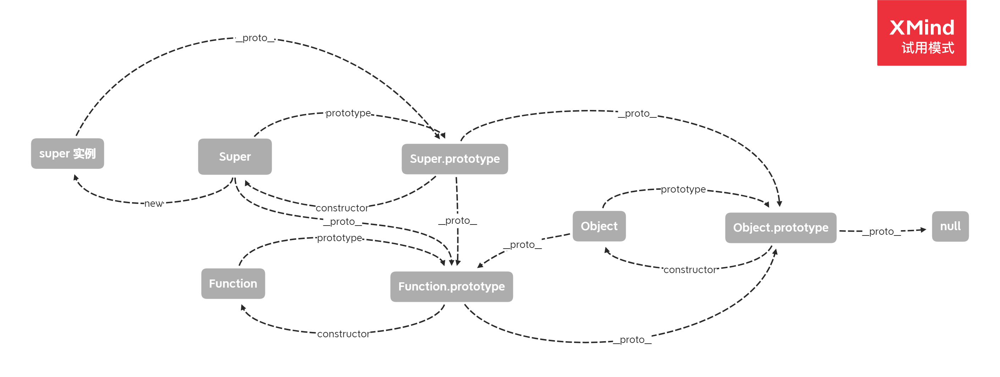

javacript知识汇总（包含新特性）

基础篇
数据类型与变量
数据类型
- 基本数据类型:
string、number、boolean、null、undefind、symbol、bigint - 引用数据类型:
Object、Array类型判断
typeof, 可以判断string、number、boolean、undefind、symbol、function、bigint, 其他引用类型的都会返回objectinstanceof, 通过原型链进行类型查找，找到返回true,找不到返回false,会有instanceof Object返回true的问题Object.prototype.toString.call,通过tostring方法返回原始类型,可以通过[Symbol.toStringTag]来进行类型定义变量
var、let、const、function关键字，以下提到的提升是提升到变量所在的块级作用域var声明的变量可以修改，并且声明的变量会提升let、const是es6提出的特性，声明的变量不会提升，会出现暂时区；let声明的变量可以修改，const声明的变量不可以修改- 用
function关键字声明的函数也会提升 - 没有使用关键字声明的变量会自动变成全局变量
迭代器与生成器
迭代是一种所有的编程语言中都会出现的一种模式。es6引入新的语言特性迭代器``生成器来支持迭代模式
迭代器-Iterator
具有迭代模式特性的数据结构被称为可迭代对象(iterable),它们都实现了Iterable接口,并且可以通过迭代器Iterator进行消费。迭代器是按需创建的一次性对象，每个迭代器都会关联一个可迭代对象。可迭代对象都会在以Symbol.iterator为键的属性中引用迭代器工厂函数作为默认迭代器
很多内置类型都实现了Iterable接口
字符串
数组
映射
集合
arguments对象
NodeList DOM集合类型
可以通过Symbol.iterator属性可以检查是否是可迭代对象1
2
3
4let number = 1
let obj = {}
console.log(number[Symbol.iterator]) // undefined
console.log(obj[Symbol.iterator]) // undefined1
2
3
4
5
6
7
8
9
10
11
12
13
14
15
16let str = 'abc'
let arr = ['a']
let map = new Map().set('a', 1).set('b', 2)
let set = new Set().add(['a', 'b'])
// 都实现了迭代器工厂函数
console.log(str[Symbol.iterator]) // ƒ values() { [native code] }
console.log(arr[Symbol.iterator]) // ƒ values() { [native code] }
console.log(map[Symbol.iterator]) // ƒ values() { [native code] }
console.log(set[Symbol.iterator]) // ƒ values() { [native code] }
// 调用工厂函数会返回一个可迭代对象
console.log(str[Symbol.iterator]) // String Iterator {}
console.log(arr[Symbol.iterator]) // ƒ Array Iterator {}
console.log(map[Symbol.iterator]) // ƒ MapIterator {}
console.log(set[Symbol.iterator]) // ƒ SetIterator {}实现可迭代协议的所有类型都会自动兼容可迭代对象的任何语言特性(可以不显式调用迭代器工厂函数来实现迭代器)，它们的特性包含：
for-of循环
数组解构
扩展符操作
Array.from()
创建集合
创建映射
Promise.all()接收由期约组成的可迭代对象
Promise.race()接收由期约组成的可迭代对象
yield*操作符，在生成器中使用
迭代器API会通过next()方法在可迭代对象中遍历数据。每次成功调用next()方法后都会返回一个
IteratorResult对象，IteratorResult对象包含两个属性：done和value;done是个布尔值，true时代表遍历结束，value包含下一个迭代对象的值1
2
3
4
5
6
7
8
9
10
11// 可迭代对象
let arr1 = ['foo', 'bar']
// 迭代器工厂函数
console.log(arr1[Symbol.iterator]) // ƒ values() { [native code] }
// 迭代器
const iter = arr1[Symbol.iterator]() // ƒ Array Iterator {}
// 执行迭代
console.log(iter.next()) // { value: 'foo', done: false }
console.log(iter.next()) // { value: 'bar', done: false }
console.log(iter.next()) // { value: undefined, done: true }
自定义可迭代对象
原理篇
面向对象编程
面向对象特性
封装: 封装就是对具体的属性和方法(实现细节)进行隐藏，形成统一的整体对外提供对应的接口
继承: 继承就是子类可以继承父类的属性和方法，并且可以对父类的
行为进行重写多态: 同一个方法有不同的调用方法，不一样的行为，依赖于抽象和重写
封装(创建一个对象)
字面量创建
1
2
3
4
5
6const obj = {
value: 'value',
fn: function() {
console.log(this.value)
}
}new Object() || Object.create()(es6)
1
2const obj = new Object()
obj.value = 'value'构造函数方式
1
2
3
4
5
6
7function con() {
this.value = 'value'
this.fn = function() {
console.log(this.value)
}
}
const obj = new con()new的过程
- 创建一个新对象
- 这个新对象会被执行 [[prototype]] 连接，继承构造函数的原型对象
- 这个新对象会绑定到函数调用的 this
- 返回一个对象(如果函数没有返回其他对象，则返回这个新对象)
1
2
3
4
5
6
7
8
9
10/**
* 这里的__proto__是浏览器暴露的，js中并没有暴露(红宝书中写的)
*/
function myNew(fn, ...args) {
// const obj = Object.create(fn.prototype)
const obj = new Object()
obj.__proto__ = fn.prototype
const res = fn.call(obj, ...args)
return typeof res === 'object' ? res : obj
}
class(es6)
1
2
3
4
5
6class MyObj {
value: 'value',
fn: function() {
console.log(this.value)
}
}继承
在很多语言中继承的方式都有: 接口继承和实现继承；但是在ECMAScript中并没签名，所以接口继承是没有办法实现的；在ECMAScript中只能实现继承，主要通过原型链(下文中会讨论)实现
原型继承
使用到原型链的实现继承；实现思路: 将子类的原型指向一个父类的实例
1
2
3
4
5
6
7
8
9
10
11
12
13
14
15
16
17function SuperType() {
this.property = true
}
SuperType.prototype.getSuperValue = function() {
reutrn this.prototype
}
function SubType() {
this.subProperty = false
}
// 实现继承(继承super)
SubType.prototype = new SuperType()
// 新增方法
SubType.prototype.getSubValue = function() {
return this.subProperty
}
const obj = new SubType()
obj.getSuperValue() // true原型链方式的问题首先
原型链是通过父类的实例来实现的，所以继承的属性和方法是父类实例的引用；也就是说原型变成了另外一个类型的实例第二问题是，子类型在实例化的时候没有办法向父类型的构造函数传参(没有办法在不影响所有实例的情况下传参)
盗用构造函数(经典继承)
实现思路: 在子构造函数中调用父构造函数；毕竟函数就是在特定上下文中执行的简单对象，所以可以通过使用apply()和call()方法以新创建对象的上下文调用构造函数
1
2
3
4
5
6
7
8
9
10
11
12
13
14function SuperType(name) {
this.name = name
this.colors = ['red', 'green']
}
function SubType(name) {
SuperType.call(this, name) // 实现传参
}
const instance1 = new SubType('sub1') // { name: sub1, colors: ['red', 'green']}
const instance2 = new SubType('sub2') // { name: sub1, colors: ['red', 'green']}
instance1.colors = ['red', 'green', 'yellow']
/** 解决原型方式的引用类型的问题
* sub1: { name: sub1, colors: ['red', 'green', 'yellow']}
* sub2: { name: sub2, colors: ['red', 'green']}
*/盗用构造函数的问题自定义类型必须在构造函数中定义(主要问题)
父类的原型中的方法没有办法继承(子类没有办法访问父类的原型)
组合继承(伪经典)
组合继承结合了原型链和盗用构造函数的方式实现继承；实现原理: 通过借用构造函数继承实例属性，然后再通过原型链继承原型上的属性和方法1
2
3
4
5
6
7
8
9
10
11
12
13
14function SuperType(name) {
this.name = name
this.colors = ['red', 'green']
}
SuperType.prototype.getName = function() {
return this.name
}
function SubType(name, age) {
// 继承实例属性
SuperType.call(this, name)
this.age = age
}
// 继承原型上的方法和属性
SubType.prototype = new SuperType()组合继承的问题虽然解决了盗用构造函数的没有继承原型的问题，但是也调用了两次父构造函数
原型式继承
该方式的实现继承的目的是即使不定义类型也可以通过原型实现对象间的共享(不需要再构建构造函数)
1
2
3
4
5function object(o) {
function F() {}
F.prototype = o
return new F()
}Object.craete()方法将原型式继承概念规范化了寄生式
实现原理: 原型式的工厂方法，可以添加属性和方法
1
2
3
4
5
6
7function createAnother(origin) {
const clone = object(origin)
clone.sayHi = function() {
console.log('hi')
}
return clone
}寄生式继承的问题: 跟构造函数一样给对象添加方法的复用性低寄生组合式
实现原理: 将子构造函数的
prototype指向父构造函数的prototype，同时将constructor指回子构造函数1
2
3
4
5
6
7
8
9
10
11
12
13function inheritProperty(sub, super) {
const pro = object(super.prototype)
pro.constructor = sub
sub.prototype = pro
}
function SuperType() {
this.superProperty = true
}
function SubType() {
SuperType.call(this)
this.subProperty = false
}
inheritProperty(SubType, SuperType)寄生组合式解决了组合式中的两次调用父构造的问题，避免了不必要的属性重复调用问题
原型 & 原型链
javascript 与其他面向对象语言(java c++)不太相同，实现继承的方式不是通过接口来定义类和继承，是通过原型来进行实现继承。这里需要了解一下实例对象、原型对象和构造函数之间的关系: 构造函数的prototype指向原型对象; 原型对象的constructor指向构造函数; 实例对象通过构造函数new出来。每个实例对象的内部都有一个指针指向原型，并且可以获取原型的属性和方法；当通过原型来实现继承的时候就出现了原型链

1 | 类的实现是一种 继承模式，而原型体现更多的是 行为委托模式 |
es6 class 的特点
- es6 中class不会有变量提升
- es6 中class的方法是不可枚举的
- es6 中class内部会启用严格模式
- es6 中class必须使用new调用
- es6 中内无法重写类名
ps: es6 的class 其实还是使用[[prototype]]原型来实现的
函数 & 函数式
执行上下文 & 作用域
每个变量和函数都会根据上下文来决定可以访问的数据，而每个上下文都会关联一个变量对象，变量对象中包含了上下文的变量和函数，当函数执行时会将函数的上下文推入到上一个上下文中，当上下文执行完后会将上下文环境进行回收，而这些上下文就形成了作用域链；而函数被调用(执行)时，会创建一个活动对象(该对象也被称为执行上下文)；其中有几个概念: 变量对象(VO)、活动对象(AO)、作用域链(Scope Chain)
VO、AO、Scope Chain
变量对象: 每个上下文都会关联一个变量对象，保存了上下文的变量和函数活动对象: 函数运行时会在执行环境中创建一个活动对象(执行上下文)，保存了函数的参数、局部变量、参数集合(arguments)和this，活动对象就是函数的变量对象作用域链: 代码执行时会将每个上下文的变量对象压入到作用域链 ([[scope]]对象)，作用域链的顶层是函数的活动对象，底层是全局上下文的变量对象作用域链增强
通过with将一个上下文环境提升到作用域链的顶层；也可以通过try…catch将上下文环境进行修改；eval()也会修改上下文环境，但是会有性能问题
闭包
闭包是在其定义的词法环境上下文外执行的函数，有权限访问其定义的词法环境上下文作用域的函数
闭包的原理
闭包的原理是在通过变量绑定或者调用获取函数定义时的上下文，即不对其函数上下文进行销毁
闭包的使用
- 实现单例模式
1
2
3
4
5
6
7
8
9
10
11
12function Single() {
let instance
function C() {
this.name = 'aa'
}
return function() {
if(!instance) {
instance = new C()
}
return instance
}
} - 私有变量
1
2
3
4
5
6
7
8
9
10function add() {
let count = 0
return function() {
count++
console.log(count)
}
}
const a = add()
a() // 1
a() // 2 - 块级作用域
1
2
3
4
5
6
7for(var i = 1, i < 6; i++) {
(function(j) {
setTimeout(() => {
console.log(j)
}, j*1000)
})(i)
} - 函数节流
1
2
3
4
5
6
7
8
9
10
11function throttled(fn, delay) {
let timer
return function(...arg) {
if(!timer) {
timer = setTimeout(() => {
fn.call(this, ...arg)
timer = null
}, delay)
}
}
}闭包的缺点
闭包使用容易造成内存泄露，所以在使用闭包的时候要谨慎
函数调用 & this
this
this关键字是javascript中最复杂的机制之一；它是一个很特殊的关键字，被自定义到所有函数的作用域中；它可以隐式的传递一个对象的引用；而我们在认知this的时候通常会有错误的认知
- 指向自身: 从字面上认知会这样认为，但是并不是准确的，在一些模式下确实是指向自身的，但是别的模式下并不是指向自身的，下面例子
1
2
3
4
5
6
7
8function foo(num) {
this.count++
}
foo.count = 0
for(var i = 0; i < 5; i++) {
foo(i)
}
console.log(foo.count) // 0 - 指向函数的作用域: 首先词法作用域是没有办法通过javascript来访问的，虽然对象的可见标识符都是它的属性
函数调用的方式(调用位置 | this 绑定规则)
- 默认绑定
默认绑定规则会将this指向全局对象，当函数运行在 strict mode 默认绑定会指向undefined可以看到this被默认绑定到全局对象上了1
2
3
4
5function foo() {
console.log(this.a)
}
var a = 1
foo() // 1 - 隐式绑定
隐式绑定规则是在调用位置有上下文对象的时候才会触发隐式绑定会出现1
2
3
4
5
6
7
8function foo() {
console.log(this.a)
}
var obj = {
a: 1,
foo: foo
}
obj.foo() // 1隐式丢失的问题，会应用默认绑定，在赋值或者传参方式调用是1
2
3
4
5
6
7
8
9
10function foo() {
console.log(this.a)
}
var obj = {
a: 1,
foo: foo
}
var f = obj.foo
var a = 'global'
f() // global - 显示调用
可以通过call、apply强制在某个对象上调用函数；同时为了解决隐式丢失的问题，还实现硬绑定的运用思路解决隐式丢失的方法还可以通过1
2
3
4
5
6
7
8
9
10
11
12
13function foo() {
console.log(this.a)
}
var obj = {
a: 1
}
function bar() {
foo.call(obj)
}
var a = 'global'
bar() // 1
setTimeout(bar, 0) // 1
bar.call(window) // 1bind来强行修正this，下面是bind的简单实现，当然Function.prototype.bind 已经实现该方法ps: 很多api都内置显示绑定的实现了(可以了解一下)1
2
3
4
5function bind(fn, obj) {
return function() {
fn.apply(obj, arguments)
}
}
箭头函数
箭头函数是 es6 使用胖箭头(=>)运算符来定义函数表达式，它与es5定义函数的方式有一定的区别
1 | // 箭头函数的写法 |
箭头函数 和 普通函数的区别
- 箭头函数没有内置的 arguments 对象，可以通过扩展运算符
...args来获取函数的参数 - 箭头函数不可以通过 new 操作符来调用
- 箭头函数没有内置的 this 对象，而是使用了定义它的外层函数的执行上下文的 this 或者全局上下文
- 箭头函数的 this 一旦绑定不会改变(除非外层函数的执行上下文改变)，不能通过call/apply/bind改变
- 箭头函数没有原型 prototype
- 箭头函数不能作为 Generator 函数
箭头函数的 this 问题
下面用几个例子理解箭头函数的 this 问题
1 | var obj = { |
可以看出箭头函数的 this 使用了外层函数的执行上下文的 this 或者全局上下文(如果没有外层函数)，并且没有因为call/apply/bind而改变
箭头函数的参数
我们知道箭头函数没有内置的arguments对象，所有我们可以使用es6的扩展运算符来进行参数的获取
1 | const foo = (...args) => { |
es6 尾调优化
ES6 新增了一项内存管理优化机制，让 JavaScript 引擎在满足条件时可以重用栈帧
尾调优化的过程
针对下面的函数
1 | function out() { |
在没有尾调优化的时候，函数的执行过程是
- 开始执行 out函数，会将 out函数 压入栈帧中
- 遇到 return 时，需要先执行 inser函数 获取结果
- 将 inser函数 压入栈帧中
- 执行完 inser函数 将运行结果 给到 out函数，将 inser函数出栈
- out函数返回结果，将 out函数出栈
而尾调优化的过程是
- 开始执行 out函数，会将 out函数 压入栈帧中
- 遇到 return 时，需要先执行 inser函数 获取结果，发现inser函数没有使用 out函数的变量，将out函数出栈
- 将 inser函数 压入栈帧中
- 执行完 inser函数 将运行结果返回
- 将 inser函数出栈
尾调优化就是将没有调用的栈空间给优化了
尾调优化的条件
刚开始我们有提到尾调优化需要满足条件后才会执行，所有需要满足一下的条件
- 代码在严格模式下执行
- 外部函数的返回值是对尾调用函数的调用
- 尾调用函数返回后不需要执行额外的逻辑
- 尾调用函数不是引用外部函数自由变量的闭包
IIFE (立即执行函数)
立即执行函数在es6之前可以模拟块级作用域，防止变量污染问题，常用方式
1 | (function() {})() |
但是当立即执行函数是具名函数的时候会有一些有趣的事情发生，看以下代码做思考
1 | var foo = 'global'; |